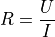
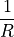

理解电流¶
家里两位小姑娘上初三了。开始预习电学和化学，最近和她们有一些讨论，我综合这些讨 论在这里为她们把相关知识的逻辑链建起来。
电学和化学，是中学知识的重大进步，这表现为两方面：
第一，从电学和化学开始，学生开始接触有一定危险的实验了。我觉得这是一个非常重要 和有益的前进。你们开始发现“事实”的重要性了。
数学题做错了，老师扣你3分，这上不了心的——又死不了人，下次再做对呗。但电学和化学 实验，如果你真做错了，这是有一定的危险的，短路电池或者不安全的化学反应，都可以 造成伤亡，这就不是扣3分的问题了（你必须严格进行实验设计，通电前进行电路检查等等 ，这些都属于基本的科学和工业素养）。我们以前说过，学而时习之，不亦乐乎。学习的 乐趣在于可以习之，而面对习之的后果。正是做越来越多的“习之”，改变世界，我们才体 会到其中乐趣的关键。
第二，从电学和化学开始，学生开始感受“微观”世界了。这是一个非常重要的人生观进步 。我们人是通过感官去认识这个世界的，对于感官感受不到的，我们通过“类比”来理解它 。比如，我们用星球的模型去理解原子核和电子，但等我们用这样的类比去理解这些东西 的时候，我们发现它表现出来的行为却和我们的假设（或者说宏观的类比）是不同的，从 宏观上我们认为电子是连续不断地围绕着原子核运动的，实际我们对这些运动进行控制和 观察后，发现它的运动不是连续的，而是一份一份地变化的，我们不知道它内部是怎么样 的，我们只知道它就是表现为这样的行为，我们只能这样理解它。这就是现实，现实不是 为你“说得通”而存在，而是你要为现实“说得通”。
科学，很大程度上，其实是把复杂的，被观察到的参数序列整理出来，找到它的规律，然 后用更少的参数把它描述出来。比如你学重力加速度，没有牛顿三大定律，你只能实验：
初速度100m/s的石头可以扔到多少米高
初速度是101m/s的石头可以扔多少米高
初速度是102m/s的石头……
用势能公式，我们就凭几个参数就可以预计这结果了。你说这个结果是不是必然正确呢？— —你无法证明，你又不是试过无限次。科学家是通过实验“很多次”，证明它有这样的规律， 并不是证明它“必然正确”。
科学家只是为规律找一个Pattern（模式），他们不在乎这个模式是自然的，还是上帝设计 的，他们只是没有找到足够的Pattern（其实是一个都没有找到）可以匹配“你跟上帝哥俩 好，这个石头在这个速度下能扔得更高”，你信谁，他们不在乎。你非要觉得你和上帝哥俩 好就可以改变自然规律，他们也不拦着，他们只是尝试根据经验找一个Pattern出来而已。
所以，从这个角度来说，数学不是科学。数学是科学的工具，它可以帮助简化这个Pattern ，但数学的推理不能取代科学的观察，如果事实观察和原来的数学偏离了，我们只能修改 数学的抽象，最后证明科学的，只有实验（但这不影响数学会为实验提供灵感）。
以前有个说法，一尺之棰,日取其半,万世不竭。这句话其实是从数学上来的，现实是，一 路这样取下去，取到最后你会只剩下一个原子，这个原子就分不成两半了（就算你分了， 它们也不是“棰原子”了——事实上也不存在棰原子，所以在细胞一级就已经不能细分了，我 这里只是比喻；））。
如果要为此做一个总结的话，科学家尝试总结事实的规律，他们通常不考虑成本；工程师 尝试基于规律实现一个目标，他们更关注成本；而信不信的问题，那是政治，它决定了对 于一群人来说，什么目标最重要，我们是否可以为这个目标进行投资。这些，其实都会改 变现实。科学家，工程师，政治家，从不同的角度，分析，或者直接影响，这个世界最终 走向哪里。
说远了，我们现在开始来理解一下电流。
接触了化学，你们知道了，这个世界上的物质由分子组成（有些直接由原子组成），分子 由原子组成，原子由质子，中子和电子组成。我读书的时候，人们描述原子是这样的：

那时很多读物还认为电子就像地球围着太阳转一样在那里飞。但现在更多研究的普及完善 了我们的认识，具体如何那属于量子物理的范畴，我也没有能力介绍，但至少我们要知道 ，它的行为是“量子化”的。量子的英语单词是quantum，其实就是说这个东西是一份一份的 ，而不是连续的，这种一份一份背后是否意味这还有其他的粒子一样的东西在控制着？这 就超出我们人类的感知范围了。正如前面说的，我们只能根据我们观察到的现象提取一个 Pattern，它“实际”怎么样的，我们永远都不会知道。
原子核带有正电，电子带有负电，正负电荷之间会形成结合力，把原子吸附在一起，这就 好像我们把几块磁铁扔在一起，它们会以一定的形状结合在一起（部分还会互相推开）。 这些吸附的力量，在化学上称为“键”。常见的键有三种：
共价键：这是你们化学课要学的，无论原理如何，反正这会形成非常稳定的结构，很大程 度上，分子都是靠这个形成的，比如两个氧结合一个碳，通过共价键吸在一起了，就形成 一个二氧化碳的“分子”，没有外部能量的注入，谁也分不开他们。由于结合起来后，电子 的电和原子核的电是互相中和的，所以这种物质不带电。我不知道这个是不是规律——但我 的经验是——通常这种物质也不导电。
离子键：这个是一个原子借了另一个原子的电子，形成了“离子”，一个带正电（被借走电 子的），一个带负电（借到电子的）。比如氯化钠（盐），就是钠被氯借走一个电子，形 成带一个正电的钠离子和一个带负电的氯离子。这些离子电性不同，就会吸附在一起，形 成物质。这种其实并不是一个“分子”，而是一堆“离子”吸在一起，由于最终正负离子的数 量是相同的，通常这个东西本身也不带电，但又由于他们并没有紧密结合在一起，一旦发 生了特定的化学反应，就可能分离，变成电池。离子键物质本身通常不导电，但他们的溶 液通常是导电的（比如盐水）。
金属键：这种键是一种结晶结构，还是靠原子核和电子的吸附作用构成整个结合的，但有 趣的是，这些电子都是自由的，并不是被吸死在其中某个原子核上。这个怎么能吸紧的我 不知道，反正反应出来就是如此，我们暂时先只是看结论。金属很容易可以带电或者导电 ，就因为这些电子的存在。
由于金属中自由电子的存在，当金属在磁场中运动的时候，因为磁场的作用，金属中的电 子自由运动，就形成了电流。（具体的规律课本上有，不归我讲，我只是串逻辑链）。
现在看看电流的方向。
我们这样理解一个金属：

每个空腔就是一个原子核影响的范围，电子和它在一起，两者中和，整个金属看起来是没 有电的。现在这个金属在磁场中运动，在磁场的影响下（如何影响要自己看书，不要简单 理解为是磁力“吸”过去的），电子跑到一边去了：

所以，所谓电流的运动方向，看你怎么说了，有点像你坐在火车里，说月台往后走，月台 上的人说你往前走，取决于你用怎么做参照物而已。
我们用验电器，原理也是这样的。一开始验电器里面是没有电的，它是这样的：

这时两个金属板没有电，互相没有电的作用力，就不会张开。这时，比如你放一个带正电 的东西过来：

验电器上的电子就会受到那边正电质子空间的吸引，流过去了，金属板就变成带正电了， 同性相斥，金属板就张开了：

所以，本质上电流就是“电子流”，或者“正离子流”，或者“负离子流”，我们用正电走的方 向称为电流的方向，但里面的微粒是向哪个方向运动，这是说不定的。
由于正负电的吸引作用，多余的电子会重新回到原来的位置，这就形成了电流。电流就是 有多少电子（或者离子，下同）流过一个地方。这和水流很像。我们很多时候学电学，一 上来就开始学欧姆定理，一开始就确定电池的电压是不变的，好像这是天经地义的（这是 我以前学电学百思不得其解的问题），实际上不是。电流的形成是正负电不平衡导致的电 荷（无论是负的电子还是正的质子电空间）流动，流动潜在可以产生的冲击力通过电压来 衡量，如果你本来就没有多少电子可以流动，你电压再高也没用，电子流完了，电压马上 就会掉下来。这个用水流来类比就是这样的：

左边的水比较高，它对右边水缸的压力就是它们之间的高度差，但如果上面的水用完了， 或者不够了，虽然有这个高度差，但就不能再构成那个压力了。所以，前提是你必须持续 维持这个高度差，这就是电池的作用，电池类似一个抽水机，不断把下面的水抽回到上面 去，维持这个高度差，才能保证电压是稳定的：

如果中间的管道太宽，水可以一次冲下来，抽水机就顶不住了，电压同样会掉下去：

可以看到，如果流量太大，抽水机抽不过来，下面的水位就会上升到和上面一样，结果就 是电压没有了。这种情况下电压也是不能维持的。同时，这种情况电池本身也受到巨大的 压力，就有可能造成爆炸。这种情况，我们就称为短路：

要想不短路，我们就会需要用更窄的管道，这就是电阻：

虽然你上面维持着比较高的势能，但你下不来，压力都被那个窄管道承受了，那个东西就 叫电阻。电阻分担的压力（电压），就叫“压降”。
如果我们把两个电阻串在一起，他们会构成更大的阻力，这是串联（这个用管道来类比就 不太好类比了，你可以理解为这个管道是个滤网，拦住更多的压力：

两个滤网（电阻）根据电阻的大小，各自分担了一部分压降。
而并联就是这样了：

很显然，这个总的阻力就小了，而且，谁的阻力小一点，谁的电流就会大一点。两个电阻 根据阻值的大小，每人分担了一部分“电流”。
所以，并联和串联，一个用来分担电流，一个用来分担电压。我们用电流表和电压表来测 量电路，要不对电路造成影响，就要让它们加进去的时候不改变电路的特性，所以电流表 要很低的电阻（称为这个仪表的内阻），这样它串联进去的时候不会阻碍电流的流动。而 电压表要很高的电阻，这样它并联进去的时候不会分走过多的电流：

所以我们做实验的时候，电流表是个比较容易出危险的仪器：

我们在连线的时候可能看到电池正负极之间连了这么个大家伙，应该是安全的，其实不是 。我们必须先独立进行电路设计，然后严格按电路进行连接（另外注意电压表和电流表都 有正负方向的，这个也要连对），否则很容易造成伤亡或者器件的损坏。
电阻是一种线性器件，它的特点就是流过的电流也它受到的压力是成正比的（这个比就被 定义为电阻了），这就是欧姆定律：

但其实，不是每个器件的电流和电压都成正比的，这种时候我们会用电压和电流的函数关 系来表示它的能力。这种称为一个器件的“伏安特性”。比如电阻的伏安特性是这样的（图 中的R也可以是

这其实可以理解为等价的）：

这个关系是一条直线，所以这种器件就称为线性器件。而有些器件，比如二极管，它的伏 安特性是这样的：

这种器件，我们就称为“非线性器件”。
我们平时做电路的分析，有两个问题比较难解决，一个是非线性问题，这个问题的解决思 路简单说就是列方程，管它三七二十一，认定三个要素来列方程：
电池，只要没有过载，电压就不会变（这是一个常数方程）
电流是不能存储的，对于电路的任何一个点，流入的电流等于流出的电流（这是一条一 次方程）

伏安特性（这个是几次方程就看你用的是不是线性器件了）
按着已知的条件都用上，方程够了，什么问题都能解决。不要去想什么这是什么电路，那 是什么电路。这是为什么你们学了这么多方程的思想才开始学习物理和化学，因为面对这 种复杂系统，用简单的“因-果”来考虑问题，脑子一下就乱掉了。
第二个难点是动态分析，就是比如你的电池电压总在变（交流电就是这样的），还有一些 器件也会引起这样的变化，这个东西就会变得很复杂。谢天谢地，这个东西你们大学才学 ，教这个不关我的事。中学会学一些电容电感电路的基本特征，那个等到有问题的时候我 们单独讨论吧。